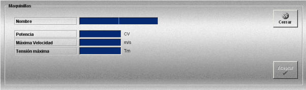

Maquinillas
La creación y edición de maquinillas se realiza mediante la siguiente ventana.

Esta ventana permite definir las maquinillas que podrán ser añadidas a las unidades participantes en los ejercicios y que son necesarias para poder ejecutar cualquier tipo de arte de pesca.
Cada buque sólo puede contener una maquinilla.
Para cada maquinilla se definen los siguientes datos:
Nombre: Nombre de la maquinilla.
Formato: caracteres alfanuméricos.
Potencia: Potencia de la maquinilla.
Unidades: caballos de vapor
Rango: 0.00- 10000.00
Velocidad Máxima: Velocidad máxima a la que se larga la red.
Unidades: metros/segundos
Rango: 0.00- 8.00
Tensión Máxima: Tensión máxima que soporta el aparejo.
Unidades: toneladas
Rango: 0.00- 100000.00